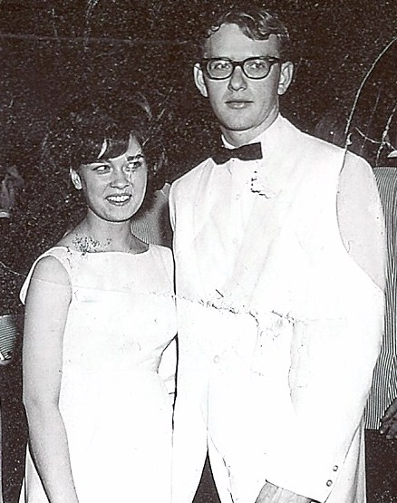
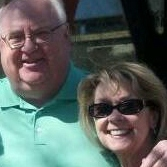

BHS 1967 Class Member
Linda (Swain) Hinz
Click to Email
Click to Email
 1967 Click for Franklin Elementary Photo |
2012 |
|  1966 - Linda & John Hinz |
 2012 - Linda & John |
| 2002 - Linda |
| 1967 Click for Franklin Elementary Photo |
2012 |
|  1966 - Linda & John Hinz |
 2012 - Linda & John |
| 2002 - Linda |
Life History:
After many stops and starts, BA from Simpson College and MBA from Drake University.
The majority of my career has been in the real estate industry- mortgage lending, title insurance
industry and real estate franchising. Loved my work but truly love my retirement!
Linda Swain Hinz
2012 Update:
Occupation: Business Development Director for Title Guarany Division of Iowa Finance
Authority
A lot of changes since my last update. After my husband died, many changes for me. Still work for the
State of Iowa, still enjoy what I do and plan to keep at it for a
few more years. I have recently taken up golf - I'm very bad but am having a lot of fun. I've really
enjoyed the chance to get together with some of our classmates in the last year - reconnecting is fun!
I've also re-connected with John Hinz - we dated several years in high school, and we were amazingly
able to pick right back up! Life is strange sometimes, but I am having a wonderful time...life is
good to me.
Life History: After many stops and starts, BA from Simpson College and MBA from
Drake University. My entire career has been in the real estate industry, from
lending to selling franchises. I now work for the state of Iowa - still in real
estate, and still working with lenders and attorneys throughout the state. I think
about retiring sometimes, but I still really love working and can't imagine not!
Spouse - Dick Berg
No kids, one (old) spoiled dog